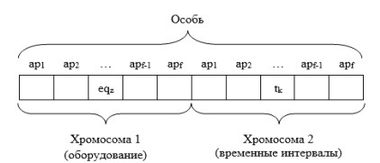
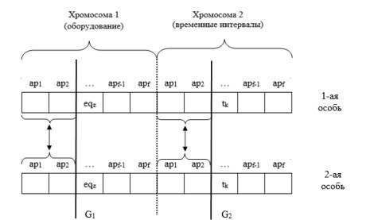
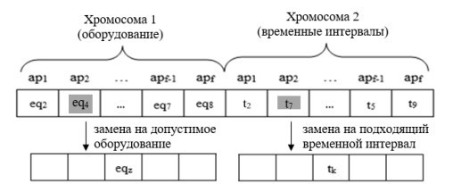
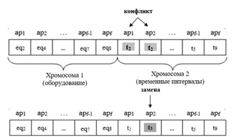

Задорожная Е.Г., Савкова Е.О., Кожбакова А.А. Модифицированный генетический алгоритм формирования графика прохождения лечебно-оздоровительных процедур. Разработан алгоритм, особенностью которого является использование двух взаимосвязанных хромосом. Рассмотрены модифицированные процедуры скрещивания и мутации, адаптированные для работы с предложенными структурированными объектами генетической оптимизации.
ГЕНЕТИЧЕСКИЙ АЛГОРИТМ, ОПТИМИЗАЦИЯ, РАСПИСАНИЕ, ЛЕЧЕБНО-ОЗДОРОВИТЕЛЬНЫЕ ПРОЦЕДУРЫ, ХРОМОСОМЫ, КРОССИНГОВЕР, МУТАЦИЯ
Zadorozhnaya K.G., Savkova H.O., Kozhbakova A.A.
«Donetsk National Technical University», Donetsk, Russian Federation
Zadorozhnaya K.G., Savkova H.O., Kozhbakova A.A. Modified genetic algorithm for creation of the schedule for the passing of health-related procedures. The algorithm which feature is use of two interconnected chromosomes is developed. Modified crossing and mutation procedures adapted to work with the proposed structured objects of genetic optimization are considered.
genetic algorithm, optimization, schedule, health-related procedures, chromosomes, crossover, mutation
Для разработки соответствующего заданным требованиям алгоритма формирования графика прохождения лечебно-оздоровительных процедур были рассмотрены различные методы решения задач календарного планирования, в том числе и метаэвристики, которые хорошо себя показали при решении оптимизационных, комбинаторных, а также других видов задач. Алгоритм метаэвристик основан на случайном поиске возможных решений задачи, оптимальных или близких к оптимальным, пока не будет выполнено некое условие или достигнуто заданное число итераций.
В результате анализа было выявлено, что ни один из методов в классическом представлении не может покрыть все аспекты разрабатываемой предметной области. Однако, генетический алгоритм является более гибким в процессе поиска решения, поскольку использует несколько точек поискового пространства [1]. Для решения поставленной задачи предложено использовать модифицированный генетический алгоритм, который позволит получать оптимальные решения с учетом особенностей и специфики работы лечебно-оздоровительных учреждений.
В разрабатываемом модифицированном генетическом алгоритме подразумевается, что особь является возможным вариантом графика прохождения лечебно-оздоровительных процедур для выбранного пациента pi.
Каждая особь представлена в виде двух взаимосвязанных хромосом, где информация 1-ой – оборудование, отведенное на проведение назначенных процедур, а 2-ой – сеансы (промежутки времени), за которые процедуры будут проведены пациенту (рисунок 1) [2]. Также в данной задаче можно использовать особь, состоящую из трех хромосом, где 3-я содержит информацию о специалистах, предоставляющих процедуры. Однако для упрощения алгоритма данная информация будет учитываться в назначениях aps.
В предлагаемом генетическом алгоритме не требуется кодирования генов хромосом в виде нулей и единиц как это принято в существующих генетических алгоритмах. Гены 1-ой хромосомы содержат информацию об оборудовании из множества Eq = {eqz}, где z ∊ [1, Neq]. При этом каждое оборудование предназначено для определённой процедуры или вида процедур. Поэтому оборудование (eqznum, eqztype) характеризуется номером eqznum и типом проводимых процедур eqztype. Гены 2-ой хромосомы содержат информацию о промежутках времени из множества временных интервалов T = {tk}, где k ∊ [1, Nt]. Каждый временной интервал (tkdate, tktime) характеризуется двумя параметрами: tkdate – дата проведения лечебно-оздоровительной процедуры (номер дня), tktime – время (номер временного интервала в течение дня).

Для структурирования необходимых данных возникла необходимость в множестве назначения Ap = {aps}, где s ∊ [1, f]. Данное множество содержит блочную информацию о назначенных процедурах procj пациенту pi, и специалистах, которые будут их проводить.
В обеих хромосомах одинаковое количество генов f, равное количеству назначенных процедур пациенту. Следовательно, s гену 1-ой хромосомы соответствует оборудование (из числа допустимых), выбранное для предоставления процедуры, а s гену 2-ой хромосомы – время её проведения [2].
Разработанный модифицированный генетический алгоритм для решения задачи формирования оптимального графика прохождения лечебно-оздоровительных процедур можно представить следующей последовательностью действий:
Для предотвращения потери лучших особей в качестве метода отбора предлагается использовать турнирную селекцию, дополненную принципом элитарной стратегии [4], которая заключается в защите наилучших особей на последующих итерациях. Из предыдущей популяции выбирается Q отдельных особей (число Q имеет фиксированное числовое значение), имеющих максимальное значение функции пригодности (1) [3].
Функцией пригодности в данном случае является целевая функция, представленная в виде суммы значений критериев потери качества К для всех назначенных процедур пациенту pi. Требуется найти такое решение, которое минимизирует значение целевой функции:
F = ∑p=1N Kp → min,
(1)
где Kp – значение критерия потери качества для одной из назначенных процедур пациенту.
При этом Kp вычисляется по формуле:
K = f(eqz, tk) = ∑q=1M cq × koefq(eqz, tk),
(2)
где koefq − значение коэффициента штрафа за невыполнение q−го частного критерия;
cq − оценка, определяющая степень невыполнения q−го частного критерия;
eqz – оборудование;
tk − временной интервал [4].


В результате мутации s-му 1-ой хромосомы будет присвоен номер оборудования, из допустимого набора оборудований, предназначенных для проведения данной процедуры, а для s-го гена 2-ой хромосомы будет выбрано любое свободное значение временного интервала для данного оборудования (рисунок 3).

Ген «конфликтов» позволяет сократить время проведения вычислительного эксперимента, что непосредственно ускоряет процесс сходимости алгоритма и получения оптимального решения [3].
Если критерий останова алгоритма выполнен, то выбор лучшей особи в конечной популяции – результат работы алгоритма. Иначе переходим на шаг 2 (селекция особей) и выполняем алгоритм до тех пор, пока не выполнится критерий останова. В качестве решения выбирается особь, которая в наибольшей степени удовлетворяет всем требованиям и ограничениям разрабатываемой предметной области [2].
Существует также менее ресурсозатратный вариант решения. Упрощение происходит на уровне формирования особи. Поскольку каждая процедура procj, назначенная пациенту pi может предоставляться с определённой периодичностью (каждый день, раз в 2-3 дня и т. д.), то оптимально будет определить оборудование и интервал времени для 1-ой процедуры каждого вида, а потом занимать полученные интервалы с указанной периодичностью. Эффективность обоих вариантов будет рассмотрена экспериментальным путем.
В рамках данной статьи был детально описан разрабатываемый модифицированный генетический алгоритм формирования оптимального графика прохождения лечебно-оздоровительных процедур. В качестве объектов генетической оптимизации было предложено использовать особи, состоящие из двух хромосом, связанных между собой генами, которые характеризуют блоки назначений процедур.
Также были предложены модифицированные процедуры скрещивания, мутации, проверки значений функции конфликтов, специально адаптированные для работы с предложенными структурированными объектами генетической оптимизации. Это позволяет существенно упростить учет ограничений, вызванных особенностями разрабатываемой предметной области.
В результате была сформирована теоретическая база для реализации модифицированного генетического алгоритма. Целесообразно проводить исследования по оптимизации и улучшению разрабатываемого алгоритма для получения более удовлетворяющих результатов.